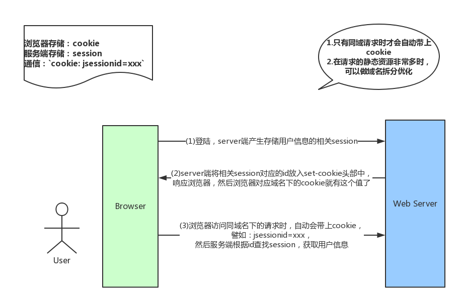
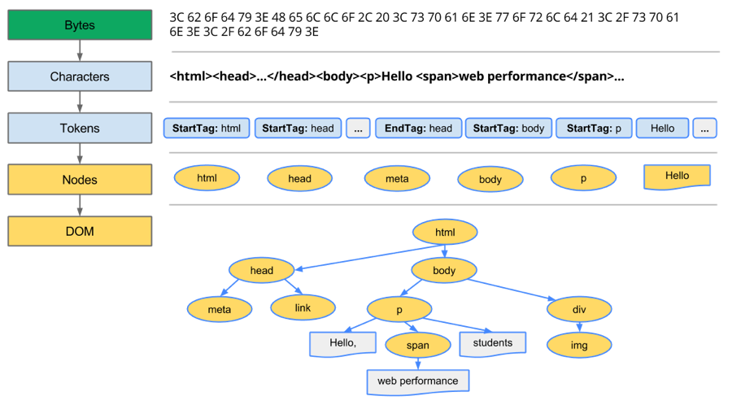

浏览器
todos
- 怎么解决跨域
- ## 浏览器事件解读
事件代理
介绍
- 当我们打开浏览器输入一个网址的时候，首先浏览器会通过http去请求各种资源，这些资源包括：HTML、图片、脚本等等。
- 现在流行的做法是通过webpack、babel等将es6等可以提升开发者效率的工具将脚本、图片等打包好然后上传到服务器上，这个过程又设计了CDN、缓存、优化资源下载速度等等。
- 浏览器请求完需要的资源就会开始渲染静态资源。
- 最终将页面呈现在用户面前。
- 开发者的主要工作集中在使用webpack、babel等工具开发页面，同时优化页面性能，提升用户体验，使用一些工具来加快开发速度，提升开发质量。
- 这里面还有很多东西，比如：解析域名、安全性、优化、组件库、跨域等等。
- 这是一个庞大的工程，需要学习的东西也很多。
跨域
为何存在
DOM同源策略：禁止对不同源页面DOM进行操作。这里主要场景是iframe跨域的情况，不同域名的iframe是限制互相访问的
XmlHttpRequest同源策略：禁止使用XHR对象向不同源的服务器地址发起HTTP请求
防止CSRF攻击
解决方式
跨域资源共享（Cross-origin resource sharing/CORS）
CORS需要浏览器和服务器同时支持。目前，所有浏览器都支持该功能，IE浏览器不能低于IE10。
整个CORS通信过程，都是浏览器自动完成，不需要用户参与。对于开发者来说，CORS通信与同源的AJAX通信没有差别，代码完全一样。浏览器一旦发现AJAX请求跨源，就会自动添加一些附加的头信息，有时还会多出一次附加的请求，但用户不会有感觉。
因此，实现CORS通信的关键是服务器。只要服务器实现了CORS接口，就可以跨源通信。
jsonp
利用
<script>标签没有跨域限制的“漏洞”（历史遗迹啊）来达到与第三方通讯的目的。当需要通讯时，本站脚本创建一个
<script>元素，地址指向第三方的API网址，<script src="http://www.example.net/api?param1=1¶m2=2"></script>并提供一个回调函数来接收数据（函数名可约定，或通过地址参数传递）。第三方产生的响应为json数据的包装（故称之为jsonp，即json padding，相当于一个立即执行的函数），形如：callback({“name”:”hax”,”gender”:”Male”})，这样浏览器会调用callback函数，并传递解析后json对象作为参数。本站脚本可在callback函数里处理所传入的数据。
JSONP只支持GET请求，CORS支持所有类型的HTTP请求。JSONP的优势在于支持老式浏览器，以及可以向不支持CORS的网站请求数据。
服务器代理
- 浏览器有跨域限制，但是服务器不存在跨域问题，所以可以由服务器请求所要域的资源再返回给客户端。
document.domain
window.name
location.hash
postMessage
输入密码保密
使用https
客户端使用提交md5，服务端数据库通过md5 + 服务端数据库通过 md5(salt+md5(password)) 的规则存储密码，该 salt 仅存储在服务端，且在每次存储密码时都随机生成。这样即使被拖库，制作字典的成本也非常高。密码被 md5() 提交到服务端之后，可通过 md5(salt + form[‘password’]) 与数据库密码比对。此方法可以在避免明文存储密码的前提下，实现密码加密提交与验证。这里还有防止 replay 攻击（请求被重新发出一次即可能通过验证）的问题，由服务端颁发并验证一个带有时间戳的可信 token （或一次性的）即可。
最好使用第三方登录以及手机验证码验证
类型
XSS：跨站脚本（cross-site scripting），是一种网站应用程序的安全漏洞攻击，是代码注入的一种。它允许恶意用户将代码注入到网页上，其他用户在观看网页时就会受到影响。这类攻击通常包含了HTML以及用户端脚本语言。比如：发帖时写下恶意代码
CSRF：跨站请求伪造（Cross-site request forgery），也被称为 one-click attack 或者 session riding，通常缩写为 CSRF 或者 XSRF， 是一种挟制用户在当前已登录的Web应用程序上执行非本意的操作的攻击方法。比如：帖子里包含恶意链接，点击就会发出恶意请求
XSS是过程，CSRF是结果，XSS获取到用户信息，CSRF利用用户信息伪造请求来损害用户利益，CSRF是基于XSS的。
预防
CSRF依赖于XSS，防住XSS基本也就防住了CSRF
始终检查用户发送给服务器的数据，尽量不要显示用户提供的html内容
执行存储用户发送的数据的清理工作
转义有潜在危险的字符
限制输入的数据量
沙箱上传文件（将它们存储在不同的服务器上，只允许通过不同的子域访问文件，或者通过完全不同的域名访问文件更好）
安全问题汇总
| 简称 | 名称 | 发生时机 | 攻击方式 | 利用 |
|---|---|---|---|---|
| XSS | 跨站脚本 | 将用户发送的数据显示给用户或另一个用户 | 向web页面注入客户端脚本 | 用户对web站点的信任 |
| CSRF | 跨站点请求伪造 | 将用户发送的数据显示给用户或另一个用户 | 向web页面注入客户端脚本 | 网站对其用户提供的信任 |
预防措施
- 始终检查用户发送给服务器的数据，尽量不要显示用户提供的html内容
- 执行存储用户发送的数据的清理工作
- 转义有潜在危险的字符
- 限制输入的数据量
- 沙箱上传文件（将它们存储在不同的服务器上，只允许通过不同的子域访问文件，或者通过完全不同的域名访问文件更好）
cookie
浏览器只能对非httpOnly的cookie进行操作。
httpOnly的cookie只能由服务器操作。
不要在缓存中存储敏感信息，服务器需要对缓存数据进行校验。
定义
服务器发送到用户浏览器并保存在本地的一小块数据，它用于告知服务端两个请求是否来自同一浏览器
用处
- 会话状态管理：用户登录状态，购物车，游戏分数等
- 个性化设置：用户个性化设置,主题等
- 浏览器行为跟踪：跟踪分析用户行为等
缺点
由于服务器指定Cookie后，浏览器的每次请求都会携带Cookie数据，会带来额外的性能开销（尤其是在移动环境下）
大小限制
4KB左右
存在时间
如果不在浏览器中设置过期时间，cookie被保存在内存中，生命周期随浏览器的关闭而结束，这种cookie简称会话cookie。如果在浏览器中设置了cookie的过期时间，cookie被保存在硬盘中，关闭浏览器后，cookie数据仍然存在，直到过期时间结束才消失。
如何清除
1 | /** |
localstorage
存在时间
除非被清除，否则永久保存
大小限制
一般为5MB
注意
- 不同浏览器无法共享localStorage或sessionStorage中的信息。
- 相同浏览器且相同域名和端口的不同页面间可以共享相同的localStorage。
- 不同页面或标签页间无法共享sessionStorage的信息。这里需要注意的是，页面及标签页仅指顶级窗口，如果一个标签页包含多个iframe标签且他们属于同源页面，那么他们之间是可以共享sessionStorage的。
sessionstorage
存在时间
页面会话结束——也就是说当页面被关闭时，数据存储在 sessionStorage 会被清除，页面刷新不会被删除。不能在不同页面间共享，可以在同一个页面的多个iframe中共享。
大小限制
一般为5MB
路由
hash模式
2014年之前，通过hash来实现路由：1
http://www.xxx.com/#/login
这种#/loginhash值的变化，不会导致浏览器向服务器发出请求，所以不会刷新页面。hash值的变化，会触发hashchange这个事件，通过这个事件我们就可以知道hash值发生了哪些变化。然后我们可以监听hashchange来实现更新页面部分内容的操作。
history模式
2014年后，因为 HTML5 标准发布。多了pushState、popState、replaceState，可以改变 url 地址且不会发送请求。通过这些就能用另一种方式来实现前端路由了，但原理都是跟 hash 实现相同的。用了 HTML5 的实现，单页路由的 url 就不会多出一个#，变得更加美观。但因为没有 # 号，所以当用户刷新页面之类的操作时，浏览器还是会给服务器发送请求。为了避免出现这种情况，所以这个实现需要服务器的支持，需要把所有路由都重定向到根页面。
vue-router示意图

移动端点击穿透
现象
点击穿透问题：点击蒙层（
mask）上的关闭按钮，蒙层消失后发现触发了按钮下面元素的click事件- 蒙层的关闭按钮绑定的是
touch事件，而按钮下面元素绑定的是click事件，touch事件触发之后，蒙层消失了，300ms后这个点的click事件fire，event的target自然就是按钮下面的元素，因为按钮跟蒙层一起消失了
- 蒙层的关闭按钮绑定的是
跨页面点击穿透问题：如果按钮下面恰好是一个有
href属性的a标签，那么页面就会发生跳转- 因为
a标签跳转默认是click事件触发 ，所以原理和上面的完全相同
- 因为
另一种跨页面点击穿透问题：这次没有
mask了，直接点击页内按钮跳转至新页，然后发现新页面中对应位置元素的click事件被触发了- 和蒙层的道理一样，
js控制页面跳转的逻辑如果是绑定在touch事件上的，而且新页面中对应位置的元素绑定的是click事件，而且页面在300ms内完成了跳转，三个条件同时满足，就出现这种情况了
- 和蒙层的道理一样，
新页面中对应位置元素恰好是
a标签，然后就发生连续跳转了
原因
移动浏览器提供一个特殊的功能：双击（
double tap）放大。300ms的延迟就来自这里，用户碰触页面之后，需要等待一段时间来判断是不是双击动作，而不是立即响应单击，等待的这段时间大约是300ms。
解决方案
只用
touch：最简单的解决方案，完美解决点击穿透问题，把页面内所有click全部换成touch事件（touchstart、touchend、tap）， 需要特别注意a标签，a标签的href也是click，需要去掉换成js控制的跳转，或者直接改成span + tap控制跳转。如果要求不高，不在乎滑走或者滑进来触发事件的话，span + touchend就可以了，毕竟tap需要引入第三方库，不用a标签其实没什么，移动app开发不用考虑SEO，即便用了a标签，一般也会去掉所有默认样式，不如直接用span。只用
click：下下策 ，因为会带来300ms延迟，页面内任何一个自定义交互都将增加300ms延迟，想想都慢，不用touch就不会存在touch之后300ms触发click的问题，如果交互性要求不高可以这么做， 强烈不推荐 ，快一点总是好的。拿个东西来挡住：比较笨的方法， 千万不要用
tap后延迟350ms再隐藏mask：改动最小，缺点是隐藏mask变慢了，350ms还是能感觉到慢的，只需要针对mask做处理就行，改动非常小，如果要求不高的话，用这个比较省力pointer-events：比较麻烦且有缺陷， 不建议使用，mask隐藏后，给按钮下面元素添上pointer-events: none;样式，让click穿过去，350ms后去掉这个样式，恢复响应，缺陷是mask消失后的的350ms内，用户可以看到按钮下面的元素点着没反应，如果用户手速很快的话一定会发现在下面元素的事件处理器里做检测（配合全局
flag），比较麻烦， 不建议使用，全局flag记录按钮点击的位置（坐标点），在下面元素的事件处理器里判断event的坐标点，如果相同则是那个可恶的click，拒绝响应fastclick：好用的解决方案，不介意多加载几KB的话， 不建议使用 ，因为有人遇到了bug，更多信息请查看：Fastclick导致click事件触发两次的问题，首先引入fastclick库，再把页面内所有touch事件都换成click，其实稍微有点麻烦，建议引入这几KB就为了解决点透问题不值得，不如用第一种方法呢。禁用缩放：对于不需要缩放的页面，通过设置
meta标签禁用缩放，表明这个页面是不需要缩放的，双击缩放就没有意义了。此时浏览器可以禁用默认的双击缩放行为并且去掉300ms的点击延迟。该方法缺点在于必须通过完全禁用缩放来达到去掉点击延迟的目的，但我们初衷是想禁止默认双击缩放行为，这样就不用等待300ms来判断当前操作是否是双击。但是通常情况下我们还是希望能通过双指缩放来进行缩放操作，比如放大图片，很小的一段文字等1
2<meta name="viewport" content="user-scalable=no">
<meta name="viewport" content="initial-scale=1,maximum-scale=1">
fastclick原理
预备知识：移动端点击一个元素触发事件的顺序
以下是四种touch和click事件
touchstart: 手指放到屏幕上时触发
touchmove: 手指在屏幕上滑动式触发
touchend: 手指离开屏幕时触发
touchcancel: 系统取消touch事件的时候触发，这个好像比较少用
click：在这个dom（或冒泡到这个dom）上手指触摸开始，且手指未曾在屏幕上移动（某些浏览器允许移动一个非常小的位移值），且在这个在这个dom上手指离开屏幕，且触摸和离开屏幕之间的间隔时间较短（某些浏览器不检测间隔时间，也会触发click）才能触发
上述事件发生顺序：在移动端，手指点击一个元素，会经过：touchstart –> touchmove -> touchend -> click。
基本原理：FastClick的实现原理是在检测到touchend事件的时候，会通过DOM自定义事件立即出发模拟一个click事件，并把浏览器在300ms之后真正的click事件阻止掉。
输入框定位问题
根据用户使用浏览器类型的占比选择适配哪些浏览器。
通过
navigator.userAgent判断浏览器类型，或者根据浏览器特有的属性或者方法来判断浏览器类型，再去做出合适的polyfill。直接使用悬浮窗显示输入的内容。
自适应所有手机和电脑浏览器大小
1 | <meta name="viewport" content="width=device-widht,initial-scale=1.0,suer-scalable=1.0,maximum-scale=1.0,minimum-scale=1.0"> |
1 | (function () { |
事件捕获和冒泡
先捕获再冒泡
addEventListener第三个参数是false（默认）时，事件处理采取事件冒泡的原则，当第三个参数是true时，则采取事件捕获的原则
基本思想
- 通过事件冒泡，将子元素的点击事件冒泡到父元素上，通过区分
e.target.nodeName来区分点击的是哪一个元素，以实现事件代理的效果
addEventListener
- 挂载在window对象上的keypress事件会重复触发，我们只需要判断e中的元素是不是我们需要处理的元素来触发响应的回调函数就可以了
1
2
3
4
5
6
7
8
9
10<input />
<input />
<script>
window.addEventListener('keypress', function(e) {
console.log(e)
})
window.addEventListener('keypress', function(e) {
console.log(e)
})
</script>
chrome开启GPU渲染
- 使用transform3d
页面的呈现

浏览器把获取到的
HTML代码解析成1个DOM树，HTML中的每个tag都是DOM树中的1个节点，根节点就是我们常用的document对象。DOM树里包含了所有HTML标签，包括display:none隐藏，还有用JS动态添加的元素等。浏览器把所有样式(用户定义的
CSS和用户代理)解析成样式结构体，在解析的过程中会去掉浏览器不能识别的样式，比如IE会去掉-moz开头的样式，而FF会去掉_开头的样式。DOM Tree和样式结构体组合后构建render tree,render tree类似于DOM tree，但区别很大，render tree能识别样式，render tree中每个NODE都有自己的style，而且render tree不包含隐藏的节点 (比如display:none的节点，还有head节点)，因为这些节点不会用于呈现，而且不会影响呈现的，所以就不会包含到render tree中。注意visibility:hidden隐藏的元素还是会包含到render tree中的，因为visibility:hidden会影响布局(layout)，会占有空间。根据CSS2的标准，render tree中的每个节点都称为Box，理解页面元素为一个具有填充、边距、边框和位置的盒子。一旦
render tree构建完毕后，浏览器就可以根据render tree来绘制页面了。
回流与重绘
回流比重绘的代价要高
当
render tree中的一部分(或全部)因为元素的规模尺寸，布局，隐藏等改变而需要重新构建。这就称为回流(reflow)。每个页面至少需要一次回流，就是在页面第一次加载的时候。在回流的时候，浏览器会使渲染树中受到影响的部分失效，并重新构造这部分渲染树，完成回流后，浏览器会重新绘制受影响的部分到屏幕中，该过程成为重绘。当
render tree中的一些元素需要更新属性，而这些属性只是影响元素的外观，风格，而不会影响布局的，比如background-color。则就叫称为重绘。
注意：回流必将引起重绘，而重绘不一定会引起回流。
回流何时发生：当页面布局和几何属性改变时就需要回流。下述情况会发生浏览器回流：
- 添加或者删除可见的
DOM元素； - 元素位置改变；
- 元素尺寸改变——边距、填充、边框、宽度和高度
- 内容改变——比如文本改变或者图片大小改变而引起的计算值宽度和高度改变；
- 页面渲染初始化；
- 浏览器窗口尺寸改变——
resize事件发生时； - 强制浏览器提前flush队列，例：
- offsetTop, offsetLeft, offsetWidth, offsetHeight
- scrollTop/Left/Width/Height
- clientTop/Left/Width/Height
- width,height
- 请求了getComputedStyle(), 或者 IE的 currentStyle
- 添加或者删除可见的
如何减少回流、重绘
减少回流、重绘其实就是需要减少对render tree的操作（合并多次DOM和样式的修改），并减少对一些style信息的请求，尽量利用好浏览器的优化策略。具体方法有：
直接改变
className，如果动态改变样式，则使用cssText（考虑没有优化的浏览器）让要操作的元素进行”离线处理”，处理完后一起更新
使用
DocumentFragment进行缓存操作,引发一次回流和重绘；使用
display:none技术，只引发两次回流和重绘；使用
cloneNode(true or false)和replaceChild技术，引发一次回流和重绘；
不要经常访问会引起浏览器
flush队列的属性，如果你确实要访问，利用缓存- 让元素脱离动画流，减少回流的
Render Tree的规模
页面优化
用户角度
优化能够让页面加载得更快、对用户的操作响应得更及时，能够给用户提供更为友好的体验
服务商角度
优化能够减少页面请求数、或者减小请求所占带宽，能够节省可观的资源
页面级别的优化
- 减少
http请求数，避免重复请求 - 合理设置
http缓存 - 资源合并与压缩
- 按需加载
- 将脚本放在页面底部
- 将
css放在head中
代码级别的优化
- 减少
dom操作 - 减少作用域链查找
- 避免使用
with、Function、eval，会使js性能优化失效，容易有安全问题 - 缓存复杂计算的结果，使用
join进行字符串拼接 - 给
v-for加上key，使得框架尽可能重用已有的节点 - 使用负载均衡，也就是
CDN - 同构
js，针对首屏渲染要求比较高的单页应用 - 加快接口返回速度
对未来的展望
- 更快的语言解释运行速度，
webassembly service workers- 图片编码优化
如何用更好的方式跳转app内嵌网页以及携带参数
直接透传链接携带的参数，这种方式比较笨拙
使用
localStorage，这种方式不太安全通过
jsBridge从app订阅某些数据，或者通知app某些数据
大纲
接受URL～开启网络请求线程
- 多进程的浏览器
- 多线程的浏览器内核
- 解析URL
开启网络请求线程～发出一个完整的http请求
- DNS查询得到IP
- TCP/IP请求
- 五层因特网协议栈
服务器接收到完整的http请求～对应后台接受到请求
- 负载均衡
- 后台处理
后台和前台的http交互
- http报文结构
- cookie及优化
- gzip压缩
- 长连接和短连接
- http2.0
- https
http的缓存
- 强缓存和弱缓存
- 缓存头部简述
- 头部的区别
解析页面流程
- 流程简述
- HTML解析，构建DOM
- 生成CSS规则
- 构建渲染树
- 渲染
- 简单层和复合层
- Chrome中的调试
- 资源外链的下载
- loaded和domcontentloaded
CSS可视化格式模型
- 包含块
- 控制框
- BFC
- IFC
JS引擎解析过程
- 解释阶段
- 预处理阶段
- 执行阶段
- 回收机制
前端向知识重点
- 核心知识：浏览器模型、渲染原理、JS解析过程、JS运行机制，作为骨架承载知识体系
- 重点知识：http、web、跨域、算法、流行的框架
- 扩展知识：五层因特网协议栈、hybrid模式、移动原生开发、后台相关
进程和线程
都是一个时间段的描述，是CPU工作时间段的描述，不过是颗粒大小不同的。
背景
CPU + RAM + 各种资源（显卡、光驱、键盘、GPS等）构成了电脑，电脑的运行，实际就是CPU和相关寄存器以及RAM之间的事情。
事实
CPU太快了，寄存器仅仅能够追的上他的脚步，更别说RAM和别的挂在各总线上的设备了。多个任务要执行在CPU看来就是轮流着来。
执行一段程序代码，实现一个功能，当到CPU运行的时候，相关资源（显卡，GPS等）必须就位，然后CPU开始执行。这里除了CPU之外的就构成了程序的执行环境，也就是程序上下文，当程序执行完了或者分配给他的CPU执行时间完了，它就要被切换出去，等待下一次CPU临幸，在被切换出去的最后一步工作就是保存程序当前上下文，因为这个是下次他被CPU临幸的运行环境，必须保存。
轮流方法：先加载程序A的上下文，然后开始执行A，保存程序A的上下文，调入下一个要执行的程序B的程序上下文，然后开始执行B，保存程序B的上下文，以此类推。
进程
就是包含上下文切换的程序执行时间总和：CPU加载上下文 + CPU执行时间 + CPU保存上下文
线程
进程的颗粒度太大，每次都要有上下的调入，保存，调出。如果我们把进程比喻为一个运行在电脑上的软件，那么一个软件的执行不可能是一条逻辑执行的，必定有多个分支和多个程序段，就好比要实现程序A，实际分成 a，b，c等多个块组合而成。那么这里具体的执行就可能变成：程序A得到CPU -> CPU加载上下文，开始执行程序A的a小段，然后执行A的b小段，然后再执行A的c小段，最后CPU保存A的上下文。这里a，b，c的执行是共享了A的上下文，CPU在执行的时候没有进行上下文切换的，即线程是：
- 共享了进程的上下文环境的更为细小的CPU时间段
多线程的浏览器内核
每一个tab页可以看作是浏览器内核进程，然后这个进程是多线程的，它有几大类子线程：
- GUI渲染线程
- JS引擎线程：内核进程中的一个线程，这也是为什么说JS引擎是单线程的
- 事件触发线程
- 定时触发器线程
- 异步http请求线程：每次网络请求浏览器内核都需要开辟单独的线程
多进程优势
- 避免单个tab页影响整个浏览器
- 避免插件影响整个浏览器
- 多进程可以高效的利用多核优势
- 方便使用沙盒模型隔离插件等进程，提高浏览器的稳定性
- 内存等资源消耗更大，有点空间换时间的意思
解析URL
输入URL后，会进行解析（URL本质是统一资源定位符），包含：
- protocol：协议头（http、ftp等）
- host：主机域名或IP地址
- port：端口号
- query：查询参数
- fragment：
#后的hash值，一般用来定位到某个位置
DNS查询得到IP
如果输入的是域名，需要进行dns解析成IP，大致流程：
- 如果浏览器有缓存，直接使用浏览器缓存，否则使用本机缓存，在没有使用host的情况下
- 如果本地没有，向dns域名服务器查询（可能经过路由，路由也有缓存），查询到对应的IP
注意：
- 域名查询有可能经过了CDN调度器的（如果有CDN存储功能的话）
- DNS解析是很耗时的，如果解析域名过多，会让首屏加载变得过慢，可以考虑
dns-prefetch优化
TCP/IP请求
- http本质就是TCP/IP请求
建立连接：三次握手，抽象为：
1
2
3客户端：hello，你是sever么？
服务端：hello，我是server，你是client么？
客户端：yes，我是client！断开连接：四次挥手，抽象为：
1
2
3
4主动方：我已经关闭了向你那边的主动通道了，只能被动接收了
被动方：收到通道关闭的信息
被动方：那我也告诉你，我这边向你的主动通道也关闭了
主动方：最后收到数据，之后双方无法通信TCP将http长报文划分为短报文，通过三次握手与服务端建立连接，进行可靠传输
并发限制
- 浏览器对同一域名下并发的tcp连接是有限制的（2-10个不等）
- http1.0中往往一个资源下载就需要对应一个tcp/ip请求
get和post区别
- get产生一个数据包，post两个
- get请求时，浏览器会把headers和data一起发送出去，服务器响应200（返回数据）
- post请求时，浏览器先发送headers，服务器响应100 continue，浏览器再发送data，服务器响应200（返回数据）
- get产生一个数据包，post两个
五层因特网协议栈
从客户端发出http请求到服务器接受，中间会经过一系列流程
包括
- 应用层：DNS解析成IP并发送http请求
- 传输层：建立tcp连接（三次握手）
- 网络层：IP寻址
- 数据链路层：封装成帧
- 物理层：利用物理介质传输比特流，传输的时候通过双绞线，电磁波等各种介质
完整的OSI七层框架
- 应用层：DNS解析成IP并发送http请求
- 表示层（OSI）：主要处理两个通信系统中交换信息的表示方式，包括数据格式交换，数据加密和解密，数据压缩和终端类型转换等
- 会话层（OSI）：具体管理不同用户和进程之间的对话，如控制登录和注销过程
- 传输层：建立tcp连接（三次握手）
- 网络层：IP寻址
- 数据链路层：封装成帧
- 物理层：利用物理介质传输比特流，传输的时候通过双绞线，电磁波等各种介质
从服务器接受请求到对应后台接受请求
在计算机世界里，由于单个服务器的处理客户端请求能力有一个极限，当用户的接入请求蜂拥而入时，会造成服务器忙不过来的局面，可以使用多个服务器来共同分担成千上万用户请求，这些服务器提供相同的服务，对于用户来说，根本感觉不到任何差别。
实现
- 需要有一个负载均衡设备来分发用户请求，将用户请求分发到空闲的服务器上
- 服务器返回自己的服务到负载均衡设备
- 负载均衡将服务器的服务返回用户
用户和负载均衡设备直接通信，也意味着用户做服务器域名解析时，解析得到的IP其实是负载均衡的IP，而不是服务器的IP，这样有一个好处是：当新加入/移走服务器时，仅仅需要修改负载均衡的服务器列表，而不会影响到现有的服务。
负载均衡
对于大型的项目，由于并发访问量很大，所以一台服务器是吃不消的，所以一般会有若干服务器组成一个集群，然后配合反向代理实现负载均衡，简单的说：
用户发起的请求都指向调度服务器（反向代理服务器，譬如安装了nginx控制负载均衡），然后调度服务器根据实际的调度算法，分配不同的请求给对应集群中的服务器执行，然后调度器等待实际服务器的HTTP响应，并将它反馈给用户。
后台处理
一般后台都是部署到容器中的，一般为：
- 容器接收到请求
- 对应容器中的后台程序接收到请求
- 后台程序处理后返回响应结果
概括：
- 一般有的后端是有统一的验证的，如安全拦截，跨域验证
- 如果这一步不符合规则，就直接返回了相应的http报文（如拒绝请求等）
- 然后当验证通过后，才会进入实际的后台代码，此时是程序接收到请求，然后执行（譬如查询数据库，大量计算等等）
- 等程序执行完毕后，就会返回一个http响应包（一般这一步也会经过多层封装）
- 然后就是将这个包从后端发送到前端，完成交互
前后端交互时，http报文作为信息的载体
http报文结构
跨域请求拒绝时，可能的method是options，状态码为：404/405等
部分头部字段一览：
通用头部
Request Url：请求的web服务器地址
Request Method：请求方式（GET、POST、OPTIONS、PUT、HEAD、DELETE、CONNECT、TRACE）
Status Code：请求返回的状态码，如200成功
Remote Address：请求的远程服务器地址（会转为IP）
Referrer-Policy：用来监管哪些访问来源信息，no-referrer-when-downgrade （默认值）在没有指定任何策略的情况下用户代理的默认行为。在同等安全级别的情况下，引用页面的地址会被发送(HTTPS->HTTPS)，但是在降级的情况下不会被发送 (HTTPS->HTTP)
请求头部
Accept: 接收类型，表示浏览器支持的MIME类型（对标服务端返回的Content-Type）
Accept-Encoding：浏览器支持的压缩类型,如gzip等,超出类型不能接收
Content-Type：客户端发送出去实体内容的类型
Cache-Control: 指定请求和响应遵循的缓存机制，如no-cache
If-Modified-Since：对应服务端的Last-Modified，用来匹配看文件是否变动，只能精确到1s之内，http1.0中
Expires：缓存控制，在这个时间内不会请求，直接使用缓存，http1.0，而且是服务端时间
Max-age：代表资源在本地缓存多少秒，有效时间内不会请求，而是使用缓存，http1.1中
If-None-Match：对应服务端的ETag，用来匹配文件内容是否改变（非常精确），http1.1中
Cookie: 有cookie并且同域访问时会自动带上
Connection: 当浏览器与服务器通信时对于长连接如何进行处理,如keep-alive
Host：请求的服务器URL
Origin：最初的请求是从哪里发起的（只会精确到端口）,Origin比Referer更尊重隐私
Referer：该页面的来源URL(适用于所有类型的请求，会精确到详细页面地址，csrf拦截常用到这个字段)
User-Agent：用户客户端的一些必要信息，如UA头部等
响应头部
Access-Control-Allow-Headers: 服务器端允许的请求Headers
Access-Control-Allow-Methods: 服务器端允许的请求方法
Access-Control-Allow-Origin: 服务器端允许的请求Origin头部（譬如为*）
Content-Type：服务端返回的实体内容的类型
Date：数据从服务器发送的时间
Cache-Control：告诉浏览器或其他客户，什么环境可以安全的缓存文档
Last-Modified：请求资源的最后修改时间
Expires：应该在什么时候认为文档已经过期,从而不再缓存它
Max-age：客户端的本地资源应该缓存多少秒，开启了Cache-Control后有效
ETag：请求变量的实体标签的当前值
Set-Cookie：设置和页面关联的cookie，服务器通过这个头部把cookie传给客户端
Keep-Alive：如果客户端有keep-alive，服务端也会有响应（如timeout=38）
Server：服务器的一些相关信息
一般来说，请求头部和响应头部是匹配分析的：
| 请求头部 | 响应头部 |
|---|---|
| Accept | Content-Type |
| Origin | Access-Control-Allow-Origin |
| If-Modified-Since | Last-Modified |
| If-None-Match | ETag |
请求/响应实体
除了头部，还有消息实体
请求实体会将一些需要的参数都放入进去（用于POST请求）
可以放参数的序列化形式（a=1&b=2这种），或者直接放表单对象（Form data）
一般响应实体中，就是放服务端需要传给客户端的内容
一般现在的接口请求时，实体中就是对于信息的json格式，而像页面请求这种，里面就是直接放了一个html字符串，然后浏览器自己解析并渲染
CRLF
回车换行，一般用作分隔符存在
请求头部和实体消息之间有一个CRLF分隔，响应头部和响应实体之间用一个CRLF分隔
cookie及优化
是一种浏览器本地存储方式，一般用来帮助客户端和服务端通信，常用来进行身份校验，结合服务端的session使用。
场景：
在登录页面，用户登录了
此时，服务端会生成一个session，session中有对于用户的信息（用户名，密码等）
然后会有一个sessionid（相当于服务端这个session对应的key）
服务端在登录页面写入cookie，值就是：jsessionid=xxx
浏览器本地就有这个cookie了，以后访问相同域名下的页面时，自动带上cookie，自动校验，在有效时间内无需二次登陆
一般来说，cookie是不允许存放敏感信息的（禁止明文储存用户名、密码），因为非常不安全，如果一定要储存，设置cookie为httponly，考虑rsa等非对称加密
针对同域名下大量不需要携带cookie请求（如对静态资源的访问）的优化
- 将静态资源分组，分别放到不同的域名下
在移动端，如果请求的域名数过多，会降低请求速度（因为域名整套解析流程是很耗费时间的，而且移动端一般带宽都比不上pc）
- 此时就需要用到一种优化方案：dns-prefetch（让浏览器空闲时提前解析dns域名，不过也请合理使用，勿滥用）

gzip压缩
首先，明确gzip是一种压缩格式，需要浏览器支持才有效（不过一般现在浏览器都支持）， 而且gzip压缩效率很好（高达70%左右）
然后gzip一般是由apache、tomcat等web服务器开启
当然服务器除了gzip外，也还会有其它压缩格式（如deflate，没有gzip高效，且不流行）
所以一般只需要在服务器上开启了gzip压缩，然后之后的请求就都是基于gzip压缩格式的， 非常方便。
解压的角色一般是浏览器，这样就可以减短请求时间了
长连接和短连接
tcp/ip层面：
长连接：一个tcp/ip连接上可以连续发送多个数据包，在tcp连接保持期间，如果没有数据包发送，需要双方发检测包以维持此连接，一般需要自己做在线维持（类似于心态包）
短连接：通信双方有数据交互时，就建立一个tcp连接，数据发送完成后，则断开此tcp连接
http层面：
http1.0：默认使用的是短连接，浏览器每进行一次http操作，就建立一次连接，任务结束就中断连接，譬如每一个静态资源请求时都是一个单独的连接
http1.1：默认使用长连接，使用长连接会有：connection：keep-alive，当一个网页打开完成后，客户端和服务端之间用于传输http的tcp连接不会关闭，如果客户端再次访问这个服务器的页面，会继续使用这一条已经建立的连接
注意：keep-alive不会永远保持，它有一个持续时间，一般在服务器中配置，另外长连接需要客户端和服务器都支持才有效
http2.0
http2.0不是https，相当于下一代规范，https的请求可以是http2.0规范的，http2.0和http1.1显著不同点：
1.1中，每请求一个资源，都需要开启一个tcp/ip连接，每一个资源对应一个tcp/ip请求，由于tcp/ip本身有并发数限制，所以当资源一多，速度就显著慢了下来
2.0中，一个tcp/ip请求可以请求多个资源，只要一次tcp/ip请求，就可以请求若干个资源，分割成更小的帧请求，速度明显提升
2.0特性
多路复用：一个tcp/ip连接可以请求多个资源
首部压缩：http头部压缩，减少体积
二进制分帧：在应用层和传输层之间增加了一个二进制分帧层，改进传输性能，实现低延迟和高吞吐量
服务器推送：服务端可以对客户端的一个请求发出多个响应，可以主动通知客户端
请求优先级：如果流被赋予了优先级，它就会基于这个优先级来处理，由服务器决定需要多少资源来处理该请求
https
安全版本的http
和http区别：在请求前，会建立ssl链接，确保接下来的通信都是加密的，无法被轻易截取分析
https升级：后端需要申请证书等，开销比http大（需要额外建立安全链接以及加密等），所以一般来说http2.0配合https体验更佳（http2.0更快了）
SSL/TLS握手流程，按顺序：
浏览器请求建立SSL链接，并向服务端发送一个随机数（Client random）和客户端支持的加密算法，此时是明文传输
服务端从中选出一组加密算法和hash算法，回复一个随机数（Server random），并将自己的身份信息以证书的形式返回给浏览器（证书里包含了网站地址，非对称加密的公钥，以及证书颁发机构等信息）
浏览器收到服务端的证书后
验证证书的合法性：颁发机构是否合法，证书中包含的网址是否和正在访问的一样，如果证书信任，则浏览器会显示一个小锁头，否则会有提示
用户接受证书后（不管信不信任），浏览会生产新的随机数（Premaster secret），然后证书中的公钥以及指定的加密方法加密Premaster secret，发送给服务器。
利用Client random、Server random、Premaster secret通过一定的算法生成HTTP链接数据传输的对称加密key-session key
使用约定好的HASH算法计算握手信息，并使用生成的
session key对消息进行加密，最后将之前生成的所有信息发送给服务端。
服务端收到浏览器的回复
利用已知的加解密方式与自己的私钥进行解密，获取Premaster secret
和浏览器相同规则生成
session key使用
session key解密浏览器发来的握手信息，并验证hash是否和浏览器发来的一致使用
session key加密一段握手信息，发送给浏览器
浏览器解密并计算握手消息的hash，如果与服务端发来的hash一致，此时握手过程结束
之后的所有https通信数据将由之前浏览器生成的session key并利用对称加密算法进行加密
前后端的http交互中，使用缓存能很大程度上提升效率，而且基本上对性能有要求的前端项目都是必用缓存的
强缓存和弱缓存
强缓存（200 from cache）：浏览器如果判断本地缓存未过期，就直接使用，无需发起http请求
- 未过期时，必须更新资源路径才能发起新的请求
协商缓存（304）：浏览器会向服务端发起http请求，然后服务端告诉浏览器文件未改变，让浏览器使用本地缓存
- 使用Ctrl + F5强制刷新可以使得协商缓存无效
缓存头部
强缓存：
http1.1：Cache-Control/Max-Age
http1.0：Pragma/Expires
协商缓存
http1.1：If-None-Match/E-tag
http1.0：If-Modified-Since/Last-Modified
头部区别
http1.0中的缓存控制：
Pragma：严格来说，它不属于专门的缓存控制头部，但是它设置no-cache时可以让本地强缓存失效（属于编译控制，来实现特定的指令，主要是因为兼容http1.0，所以以前又被大量应用）
Expires：服务端配置的，属于强缓存，用来控制在规定的时间之前，浏览器不会发出请求，而是直接使用本地缓存，注意，Expires一般对应服务器端时间，如Expires：Fri, 30 Oct 1998 14:19:41
If-Modified-Since/Last-Modified：这两个是成对出现的，属于协商缓存的内容，其中浏览器的头部是If-Modified-Since，而服务端的是Last-Modified，它的作用是，在发起请求时，如果If-Modified-Since和Last-Modified匹配，那么代表服务器资源并未改变，因此服务端不会返回资源实体，而是只返回头部，通知浏览器可以使用本地缓存。Last-Modified，顾名思义，指的是文件最后的修改时间，而且只能精确到1s以内
http1.1中的缓存控制：
Cache-Control：缓存控制头部，有no-cache、max-age等多种取值
Max-Age：服务端配置的，用来控制强缓存，在规定的时间之内，浏览器无需发出请求，直接使用本地缓存，注意，Max-Age是Cache-Control头部的值，不是独立的头部，譬如Cache-Control: max-age=3600，而且它的值是绝对时间，由浏览器自己计算
If-None-Match/E-tag：这两个是成对出现的，属于协商缓存的内容，其中浏览器的头部是If-None-Match，而服务端的是E-tag，同样，发出请求后，如果If-None-Match和E-tag匹配，则代表内容未变，通知浏览器使用本地缓存，和Last-Modified不同，E-tag更精确，它是类似于指纹一样的东西，基于
FileEtag INode Mtime Size生成，也就是说，只要文件变，指纹就会变，而且没有1s精确度的限制。
Max-Age相比Expires：
Expires使用的是服务器端的时间，但是有时候会有这样一种情况-客户端时间和服务端不同步，那这样，可能就会出问题了，造成了浏览器本地的缓存无用或者一直无法过期，所以一般http1.1后不推荐使用Expires
而Max-Age使用的是客户端本地时间的计算，因此不会有这个问题，因此推荐使用Max-Age。
注意，如果同时启用了Cache-Control与Expires，Cache-Control优先级高。
E-tag相比Last-Modified：
Last-Modified：表明服务端的文件最后何时改变的，它有一个缺陷就是只能精确到1s，然后还有一个问题就是有的服务端的文件会周期性的改变，导致缓存失效
E-tag：是一种指纹机制，代表文件相关指纹，只有文件变才会变，也只要文件变就会变，也没有精确时间的限制，只要文件一变，立马E-tag就不一样了
如果同时带有E-tag和Last-Modified，服务端会优先检查E-tag
各大缓存头部的整体关系如下图：
简述
解析HTML，构建DOM树
解析CSS，生成CSS规则树
合并DOM树和CSS规则，生成render树
布局render树（layout/reflow），负责各元素尺寸、位置的计算
绘制render树（paint），绘制页面像素信息
浏览器会将各层的信息发送给GPU，GPU会将各层合成（composite），显示在屏幕上
如下图：
HTML解析，构建DOM
浏览器解析HTML，构建DOM树
解析过程：Bytes -> characters -> tokens -> nodes -> DOM
实例，假设有这样一个HTML页面：1
2
3
4
5
6
7
8
9
10
11<html>
<head>
<meta name="viewport" content="width=device-width,initial-scale=1">
<link href="style.css" rel="stylesheet">
<title>Critical Path</title>
</head>
<body>
<p>Hello <span>web performance</span> students!</p>
<div><img src="awesome-photo.jpg"></div>
</body>
</html>
浏览器处理如下：

重点过程：
Conversion转换：浏览器将获得的HTML内容（Bytes）基于他的编码转换为单个字符
Tokenizing分词：浏览器按照HTML规范标准将这些字符转换为不同的标记token，每个token都有自己独特的含义以及规则集
Lexing词法分析：分词的结果是得到一堆的token，此时把它们转换为对象，这些对象分别定义它们的属性和规则
DOM构建：因为HTML标记定义的就是不同标签之间的关系，这个关系就像是一个树形结构一样，例如：body对象的父节点就是HTML对象，然后段落p对象的父节点就是body对象
生成CSS规则
简述为：Bytes -> characters -> tokens -> nodes -> CSSOM
实例，有这样一个css文件：
1 | body { font-size: 16px } |
最终的CSSOM树就是：
构建渲染树
当DOM树和CSSOM都有了后，就要开始构建渲染树了
一般来说，渲染树和DOM树相对应的，但不是严格意义上的一一对应
有一些不可见的DOM元素不会插入到渲染树中，如head这种不可见的标签或者display: none等
示意图：

渲染
有了render树，接下来就是开始渲染了，基本流程如下：
简述：
- 计算CSS样式
- 构建渲染树
- 布局，主要定位坐标和大小，是否换行，各种position、overflow、z-index属性
- 绘制，将图像绘制出来
图中的线和箭头代表通过js动态修改了DOM或CSS，导致了回流或重绘
- 回流：一般意味着元素的内容、结果、位置和尺寸发生了变化，需要重新计算样式和渲染树
- 重绘：意味着元素发生的改变只是影响了元素的一些外观之类的时候（背景色，边框颜色，文字颜色等），此时只需要应用新样式绘制这个元素就可以了
回流
回流的成本开销要高于重绘，而且一个节点的回流往往会导致子节点以及同级节点的回流，所以优化方案中一般都包括：尽量避免回流
什么会引起回流
页面渲染初始化
DOM结构改变：删除了某个节点
render树变化：减少了padding
窗口resize
改变字体大小
获取某些属性，引发：
- 很多浏览器会对回流做优化，会等到数量足够时做一次批处理回流，但是除了render树的直接变化，当获取一些属性时，浏览器为了获得正确的值也会触发回流，这样使得浏览器优化无效，包括：
- offset(Top/Left/Width/Height)
- scroll(Top/Left/Width/Height)
- cilent(Top/Left/Width/Height)
- width,height
- 调用了getComputedStyle()或者IE的currentStyle
- 很多浏览器会对回流做优化，会等到数量足够时做一次批处理回流，但是除了render树的直接变化，当获取一些属性时，浏览器为了获得正确的值也会触发回流，这样使得浏览器优化无效，包括：
优化方案
回流一定伴随着重绘，重绘却可以单独出现
减少逐项更改样式，最好一次性更改style，或者将样式定义为class并一次性更新
避免循环操作dom，创建一个documentFragment或div，在它上面应用所有DOM操作，最后再把它添加到window.document中，也就是离线操作
避免多次调用触发浏览器回流的属性，如果需要，应该使用变量缓存
将复杂的元素绝对定位或固定定位，使得它脱离文档流，否则回流代价会很高
示例
1 | var s = document.body.style; |
简单层和复合层
上述中的渲染止步于绘制，但实际上绘制这一步就没有这么简单，它可以结合复合层和简单层的概念来讲。
简述：
默认只有一个复合图层，所有的DOM节点都是在这个复合图层下的
如果开启了硬件加速功能，可以将某个节点变成复合图层
复合图层之间的绘制互不干扰，由GPU直接控制
简单图层中，就算是absolute等布局，变化时不影响整体的回流，但由于在同一个图层中，仍然是会影响绘制的，因此做动画时性能仍然很低。而复合层是独立的，所以一般做动画推荐使用硬件加速
Chrome中的调试
Chrome的开发者工具中，Performance中可以看到详细的渲染过程
资源外链的下载
在解析html时，会遇到一些资源外链，此时就需要进行单独处理了
分类
- CSS样式资源
- JS脚本资源
- img图片类资源
遇到外链时的处理
当遇到上述的外链时，会单独开启一个下载线程去下载资源（http1.1中是每个资源的下载都要开启一个http请求，对应一个tcp/ip链接）
遇到CSS样式资源
CSS下载时异步，不会阻塞浏览器构建DOM树
会阻塞渲染，也就是在构建render时，会等到css下载解析完毕后才进行，这点与浏览器优化有关，防止css规则不断改变，避免了重复的构建
有例外，media query声明的CSS是不会阻塞渲染的
遇到JS脚本资源
阻塞浏览器的解析，发现一个外链脚本时，需等待脚本下载完成并执行后才会继续解析HTML
浏览器的优化，一般现代浏览器有优化，在脚本阻塞时，也会继续下载其它资源（有并发上限），虽然脚本可以并行下载，但解析过程仍然是阻塞的，也就是说必须这个脚本执行完毕后才会接下来的解析，并行下载只是一种优化而已
defer与async，普通的脚本是会阻塞浏览器解析的，但是可以加上defer或async属性，这样脚本就变成异步了，可以等到解析完毕后再执行
defer是延迟执行：在浏览器看起来的效果像是将脚本放在了body后面一样（虽然按规范应该是在DOMContentLoaded事件前，但实际上不同浏览器的优化效果不一样，也有可能在它后面）
async是异步执行：异步下载完毕后就会执行，不确保执行顺序，一定在onload前，但不确定在DOMContentLoaded事件的前或后
遇到图片类资源
遇到图片等资源时，直接就是异步下载，不会阻塞解析，下载完毕后直接用图片替换原有src的地方
loaded和domcontentloaded
DOMContentLoaded 事件触发时，仅当DOM加载完成，不包括样式表，图片(譬如如果有async加载的脚本就不一定完成)
load 事件触发时，页面上所有的DOM，样式表，脚本，图片都已经加载完成了
规定了浏览器在页面中如何处理文档数
CSS中规定每一个元素都有自己的盒子模型（相当于规定了这个元素如何显示）
可视化格式模型就是把这些盒子按照规则摆放到页面上，也就是如何布局
盒子模型规定了怎么在页面里摆放盒子，盒子的相互作用等
CSS有三种定位机制：普通流，浮动，绝对定位，如无特别提及，下文中都是针对普通流中的
包含块
一个元素的box定位和尺寸，会与某一矩形框有关，这个框称之为包含块。
元素会为它的子孙元素创建包含块，但是，并不是说元素的包含块就是它的父元素，元素的包含块与它的祖先元素的样式等有关系。
根元素是最顶端的元素，它没有父节点，包含块就是初始包含块
static和relative的包含块由它最近的块级、单元格或者行内祖先元素的内容框创建
fixed的包含块是当前可视窗口
absolute的包含块由它最近的position属性为absolute、relative或fixed的祖先元素创建
如果祖先元素是行内元素，则包含块取决于其祖先元素的direction特性
如果祖先元素不是行内元素，那么包含块的区域应该是祖先元素的内边距边界
控制框
块框
块级元素会生成一个块框，块框会占据一整行，用来包含子box和生成的内容
块框同时也是一个块包含框，里面要么只包含块框，要么只包含行内框，如果块框内部有块级元素也有行内元素，那么行内元素会被匿名块框包围
如果一个块框在其中包含另外一个块框，那么我们强迫它只能包含块框，因此其它文本内容生成出来的都是匿名块框（而不是匿名行内框）
行内框
一个行内元素生成一个行内框
行内元素能排在一行，允许左右有其它元素
display属性的影响
block：元素生成一个块框
inline：元素生成一个或多个的行内框
inline-block：元素产生一个行内级块框，行内块框的内部会被当作块框来格式化，而此元素本身会被当作行内级框来格式化（这也是为什么会产生BFC）
none：不生成框，不在格式化结构中，visibility：hidden则会产生一个不可见的框
总结
如果一个框里，有一个块级元素，那么这个框里的内容都会被当作块框来进行格式化，因为只要出现了块级元素，就会将里面的内容分成几块，每一块独占一行（出现行内可以用匿名块框解决）
如果一个框里，没有任何块级元素，那么这个框里的内容会被当成行内框来格式化，因为里面的内容会被当成行内框来格式化，因为里面的内容是按照顺序成行的排列
BFC
全称：Block Formatting Context
定义框内部的元素渲染规则
FC像是一个大箱子，里面装有很多元素
箱子可以隔开里面的元素和外面的元素（所以外部并不会影响FC内部的渲染）
内部的规则可以是：如何定位，宽高计算，margin折叠等
不同类型的框参与的FC类型不同，譬如块级框对应BFC，行内框对应IFC：并不是说所有框都会产生FC，而是符合特定条件才会产生，只有产生了对应的FC后才会应用对应的渲染规则，规则：
在块格式化上下文中
每一个元素左外边与包含块的左边相接触（对于从右到左的格式化，右外边接触右边），即使存在浮动也是如此（所以浮动元素正常会直接贴近它的包含块的左边，与普通元素重合），除非这个元素也创建了一个新的BFC
特点
内部box在垂直方向，一个接一个的放置
box的垂直方向由margin决定，属于同一个BFC的两个box间的margin会重叠
BFC区域不会与float box重叠（可用于排版）
BFC就是页面上的一个隔离的独立容器，容器里面的子元素不会影响到外面的元素，反之也如此
计算BFC的高度时，浮动元素也参与计算（不会浮动塌陷）
如何触发BFC
根元素
float属性不为none
position为absolute或fixed
display为inline-block, flex, inline-flex，table，table-cell，table-caption
overflow不为visible
IFC
规则
在行内格式化上下文中
框一个接一个地水平排列，起点是包含块的顶部
水平方向上的 margin，border 和 padding 在框之间得到保留
框在垂直方向上可以以不同的方式对齐：它们的顶部或底部对齐，或根据其中文字的基线对齐
行框
包含那些框的长方形区域，会形成一行，叫做行框：行框的宽度由它的包含块和其中的浮动元素决定，高度的确定由行高度计算规则决定
规则：
如果几个行内框在水平方向无法放入一个行框内，它们可以分配在两个或多个垂直堆叠的行框中（即行内框的分割）
行框在堆叠时没有垂直方向上的分割且永不重叠
行框的高度总是足够容纳所包含的所有框。不过，它可能高于它包含的最高的框（例如，框对齐会引起基线对齐）
行框的左边接触到其包含块的左边，右边接触到其包含块的右边。
浮动元素可能会处于包含块边缘和行框边缘之间
尽管在相同的行内格式化上下文中的行框通常拥有相同的宽度（包含块的宽度），它们可能会因浮动元素缩短了可用宽度，而在宽度上发生变化
同一行内格式化上下文中的行框通常高度不一样（如，一行包含了一个高的图形，而其它行只包含文本）
当一行中行内框宽度的总和小于包含它们的行框的宽，它们在水平方向上的对齐，取决于
text-align特性空的行内框应该被忽略
即不包含文本，保留空白符，margin/padding/border非0的行内元素，以及其他常规流中的内容(比如，图片，inline blocks 和 inline tables)，并且不是以换行结束的行框，必须被当作零高度行框对待
总结
行内元素总是会应用IFC渲染规则
行内元素会应用IFC规则渲染，譬如text-align可以用来居中
块框内部，对于文本这类的匿名元素，会产生匿名行框包围，而行框内部就应用IFC渲染规则
行内框内部，对于那些行内元素，一样应用IFC渲染规则
另外，inline-block，会在元素外层产生IFC（所以这个元素是可以通过text-align水平居中的），当然，它内部则按照BFC规则渲染
解释阶段
JS是解释型语言，所以它无需提前编译，而是由解释器实时运行。
简述如下：
读取代码，进行词法分析，然后将代码分解成词元（token）
对词元进行语法分析，然后将代码整理成语法树
使用翻译器，将代码转为字节码
使用字节码解释器，将字节码转为机器码
最终浏览器执行的就是机器码
为了提高运行速度，现代浏览器一般采用即使编译：即字节码只在运行时编译，用到哪一行就编译哪一行，并且把编译结果缓存，这样整个程序的运行速度都能得到显著提升。
不同浏览器策略可能还不同，有的浏览器就省略了字节码的翻译步骤，直接转为机器码（chromeV8）
总结：核心的JIT编译器将源码编译成机器码运行。
预处理阶段
正式执行JS前，还会有一个预处理阶段（变量提升，分号补全），这个阶段会做一些事情来确保JS可以正确执行：
分号补全：
当有换行符，包括含有换行符的多行注释，并且下一个token没法跟前面的语法匹配时，会自动补分号
当有
}时，如果缺少分号，会补分号程序源代码结束时，如果缺少分号，会补分号
变量提升
- 包括函数提升和变量提升，函数优先，如果函数名和变量名相同，还是函数优先，不管声明顺序
执行阶段
执行上下文，执行堆栈概念（如全局上下文，当前活动上下文）
浏览器首次载入脚本，创建全局执行上下文，并压入执行栈栈顶，不可被弹出
每进入其它作用域就创建对应的执行上下文并把它压入执行栈的顶部
一旦对应的上下文执行完毕，就从栈顶弹出，并将上下文控制权交给剩下的堆栈
依次执行，最终都会回到全局执行上下文
VO（变量对象）和AO（活动对象）
VO是执行上下文的属性，只有全局上下文的变量对象允许通过VO的属性名称来间接访问（因为在全局上下文里，全局对象自身就是变量对象）
当函数被调用者激活，AO就创建了
在函数上下文中：VO === AO
在全局上下文中：VO === this === global
总的来说，VO中会存放一些变量信息（如声明的变量，函数，arguments参数等等）
作用域链
- 在函数上下文中，查找一个变量foo，如果函数的VO中找到了，就直接使用，否则去它的父级作用域链中（parent）找，如果父级中没找到，继续往上找，直到全局上下文中也没找到就报错
this机制
this是执行上下文环境的一个属性，而不是某个变量对象的属性
this是没有一个类似搜寻变量的过程
当代码中使用了this，这个 this的值就直接从执行的上下文中获取了，而不会从作用域链中搜寻
this的值只取决中进入上下文时的情况
回收机制
JS有垃圾处理器，所以无需手动回收内存，而是由垃圾处理器自动处理。
一般来说，垃圾处理器有自己的回收策略。
譬如对于那些执行完毕的函数，如果没有外部引用（被引用的话会形成闭包），则会回收。（当然一般会把回收动作切割到不同的时间段执行，防止影响性能）
常用的两种垃圾回收规则是：
标记清除：js用的
遍历所有可访问的对象
回收已不可访问的对象
当变量进入环境时，例如，在函数中声明一个变量，就将这个变量标记为“进入环境”。
从逻辑上讲，永远不能释放进入环境的变量所占用的内存，因为只要执行流进入相应的环境，就可能会用到它们。
而当变量离开环境时，则将其标记为“离开环境”。
垃圾回收器在运行的时候会给存储在内存中的所有变量都加上标记（当然，可以使用任何标记方式）。
然后，它会去掉环境中的变量以及被环境中的变量引用的变量的标记（闭包，也就是说在环境中的以及相关引用的变量会被去除标记）。
而在此之后再被加上标记的变量将被视为准备删除的变量，原因是环境中的变量已经无法访问到这些变量了。
最后，垃圾回收器完成内存清除工作，销毁那些带标记的值并回收它们所占用的内存空间。
引用计数
- 跟踪记录每个值被引用的次数，当一个值被引用时，次数+1，减持时-1，下次垃圾回收器会回收次数为0的值的内存（当然了，容易出循环引用的bug）
GC的缺陷
和其他语言一样，javascript的GC策略也无法避免一个问题： GC时，停止响应其他操作这是为了安全考虑。而Javascript的GC在100ms甚至以上，对一般的应用还好，但对于JS游戏，动画对连贯性要求比较高的应用，就麻烦了。这就是引擎需要优化的点：避免GC造成的长时间停止响应。
GC优化策略
这里介绍常用到的：分代回收（Generation GC）
目的是通过区分“临时”与“持久”对象:
多回收“临时对象”区（young generation）
少回收“持久对象”区（tenured generation）
减少每次需遍历的对象，从而减少每次GC的耗时。
pwa中的service-worker
Service Worker 有以下功能和特性：
- 一个独立的 worker 线程，独立于当前网页进程，有自己独立的 worker context。
- 一旦被 install，就永远存在，除非被手动 unregister，用到的时候可以直接唤醒，不用的时候自动睡眠
- 可编程拦截代理请求和返回，缓存文件，缓存的文件可以被网页进程取到（包括网络离线状态）
- 离线内容开发者可控
- 能向客户端推送消息
- 不能直接操作 DOM
- 必须在 HTTPS 环境下才能工作
- 异步实现，内部大都是通过 Promise 实现
优化DNS解析
无线时代，网络稳定性差，应用流量敏感，APP和server之间每次HTTP请求都需要DNS解析
无线时代，DNS解析的时间不能忽略，一旦DNS被劫持，整个APP就挂了
不需要DNS解析的HTTP请求优化方案
第一次访问时，先拉取server的ip-list保存到本地，访问过程与普通HTTP访问过程相同
未来访问时，客户端直接使用ip-list中的IP来访问server，不再需要DNS
如果DNS被劫持，直接尝试使用ip-list中的IP访问
更进一步的优化
增加一个版本号，第一次拉取ip-list时，不但把ip-list放到APP本地，并把版本号也拿到。未来不用每次都拿ip-list，而是先拿版本号，如果版本号不变，直接使用本地的ip-list，只有版本号变化时，才需要重新拉取ip-list
使用nginx不好做异构服务器的负载均衡，难以根据后端服务的处理能力来分配负载，使用ip-list，只要加上一个权重参数，就可以实现异构服务器的负载均衡：
192.168.1.1, 10
192.168.1.2, 10
192.168.1.3, 20
优势
不需要每次请求做DNS解析，节省时间
不需要每次请求做nginx转发，节省时间
不需要每次拉取拉取ip-list，节省流量
DNS被劫持时仍可以使用本地ip
为何tcp/ip存在并发限制以及浏览器并发限制
首先，基于端口数量和线程切换开销的考虑，浏览器不可能无限量的并发请求，因此衍生出来了并发限制和HTTP/1.1的Keep alive。所以，IE6/7在HTTP/1.1下的并发数量才2，这些都是针对同一个域名的，超过限制数目的请求会被阻塞。
随着技术的发展，负载均衡和各类NoSQL的大量应用，基本已经足以应对C10K的问题。但不是每个网站都懂得利用domain hash，也就是多域名来加速访问。因此，新的浏览器加大了并发数量的限制，但却控制在8以内。
由于 TCP 协议的限制，PC 端只有65536个端口可用以向外部发出连接，而操作系统对半开连接数也有限制以保护操作系统的 TCP\IP 协议栈资源不被迅速耗尽，因此浏览器不好发出太多的 TCP 连接，而是采取用完了之后再重复利用 TCP 连接或者干脆重新建立 TCP 连接的方法。
半开连接指的是 TCP 连接的一种状态，当客户端向服务器端发出一个 TCP 连接请求，在客户端还没收到服务器端的回应并发回一个确认的数据包时，这个 TCP 连接就是一个半开连接。若服务器到超时以后仍无响应，那么这个 TCP 连接就等于白费了，所以操作系统会本能的保护自己，限制 TCP 半开连接的总个数，以免有限的内核态内存空间被维护 TCP 连接所需的内存所浪费。
如果采用阻塞的套接字模型来建立连接，同时发出多个连接会导致浏览器不得不多开几个线程，而线程有时候算不得是轻量级资源，毕竟做一次上下文切换开销不小。
这是浏览器作为一个有良知的客户端在保护服务器。就像以太网的冲突检测机制，客户端在使用公共资源的时候必须要自行决定一个等待期。当超过2个客户端要使用公共资源时，强势的那个邪恶的客户端可能会导致弱势的客户端完全无法访问公共资源。从前迅雷被喷就是因为它不是一个有良知的客户端，它作为 HTTP 协议客户端没有考虑到服务器的压力，作为 BT 客户端没有考虑到自己回馈上传量的义务。
浏览器即使放弃保护自己，将所有请求一起发给服务器，也很可能会引发服务器的并发阈值控制而被BAN，而另外一个控制在8以内的原因也是keep alive技术的存在使得浏览器复用现有连接和服务器通信比创建新连接的性能要更好一些。所以，浏览器的并发数其实并不仅仅只是良知的要求，而是双方都需要保护自己的默契，并在可靠的情况下提供更好的性能。
按照普通设计，当网站cookie信息有1 KB、网站首页共150个资源时，用户在请求过程中需要发送150 KB的cookie信息，在512 Kbps的常见上行带宽下，需要长达3秒左右才能全部发送完毕。 尽管这个过程可以和页面下载不同资源的时间并发，但毕竟对速度造成了影响。 而且这些信息在js/css/images/flash等静态资源上，几乎是没有任何必要的。
解决方案是启用和主站不同的域名来放置静态资源，也就是cookie free。将css放置在页面最上方应该是很自然的习惯，但第一个css内引入的图片下载是有可能堵塞后续的其他js的下载的。而在目前普遍过百的整页请求数的前提下，浏览器提供的仅仅数个并发，对于进行了良好优化甚至是前面有CDN的系统而言，是极大的性能瓶颈。
这也就衍生了domain hash技术来使用多个域名加大并发量（因为浏览器是基于domain的并发控制，而不是page），不过过多的散布会导致DNS解析上付出额外的代价，所以一般也是控制在2-4之间。 这里常见的一个性能小坑是没有机制去确保URL的哈希一致性（即同一个静态资源应该被哈希到同一个域名下），而导致资源被多次下载。
再怎么提速，页面上过百的总资源数也仍然是很可观的，如果能将其中一些很多页面都用到的元素如常用元素如按钮、导航、Tab等的背景图，指示图标等等合并为一张大图，并利用css background的定位来使多个样式引用同一张图片，那也就可以大大的减少总请求数了，这就是css sprites的由来。全站的js/css原本并不多，其合并技术的产生却是有着和图片不同的考虑。
由于css/js通常可能对dom布局甚至是内容造成影响，在浏览器解析上，不连贯的载入是会造成多次重新渲染的。因此，在网站变大需要保持模块化来提高可维护性的前提下，js/css combine也就自然衍生了，同时也是minify、compress等对内容进行多余空格、空行、注释的整理和压缩的技术出现的原因。
随着cookie free和domain hash的引入，网站整体的打开速度将会大大的上一个台阶。 这时我们通常看到的问题是大量的请求由于全站公有header/footer/nav等关系，其对应文件早已在本地缓存里存在了，但为了确保这个内容没有发生修改，浏览器还是需要请求一次服务器，拿到一个304 Not Modified才能放心。 一些比较大型的网站在建立了比较规范的发布制度后，会将大部分静态资源的有效期设置为最长，也就是Cache-Control max-age为10年。 这样设置后，浏览器就再也不会在有缓存的前提下去确认文件是否有修改了。
超长的有效期可以让用户在访问曾访问过的网站或网页时，获得最佳的体验。 带来的复杂性则体现在每次对静态资源进行更新时，必须发布为不同的URL来确保用户重新加载变动的资源。即使是这样做完，仍然还存在着一个很大的优化空间，那就是很多页面浏览量很大，但其实用户直接很大比例直接就跳走了，第一屏以下的内容用户根本就不感兴趣。 对于超大流量的网站如淘宝、新浪等，这个问题尤其重要。
这个时候一般是通过将图片的src标签设置为一个loading或空白的样式，在用户翻页将图片放入可见区或即将放入可见区时再去载入。 不过这个优化其实和并发资源数的关系就比较小了，只是对一些散布不合理，或第一页底部的资源会有一定的帮助。 主要意图还是降低带宽费用。
[浏览器内核源码解析]
什么是GUI
负责渲染浏览器界面的HTML元素，当界面需要重绘或由于某种操作引发回流时，该线程就会执行。在js引擎运行期间，GUI渲染线程都是处于挂起状态。
js是如何操作dom的
dom有一套自己的规范可以提供给js但不限于js的语言来调用
为什么需要减少dom操作
会引起浏览器的重绘或者回流，耗费CPU和内存
可执行上下文
变量对象（Variable，VO）
每一个执行上下文都会分配一个变量对象，变量对象的属性由变量和函数声明构成。在函数上下文情况下，参数列表也会被加入到变量对象中作为属性。变量对象和当前作用域息息相关。不同作用域的变量对象互不相同，它保存了当前作用域的所有函数和变量。
- 函数声明会被加入到变量对象中，而函数表达式则不会
关于Global Object
- 当js编译器开始执行的时候会初始化一个Global Object用于关联全局的作用域。对于全局环境而言，global object就是变量对象。变量对象对于程序而言是不可读的，只有编译器才有权访问变量对象。在浏览器端，global object被具象为window对象，也就是说 global object === window === 全局环境的变量对象。因此global object对于程序而言也是唯一可读的变量对象
活动对象（activation object）
- 当函数被激活，那么一个活动对象就会被创建并且分配给执行上下文。活动对象由特殊对象arguments初始化而成。随后，他被当作变量对象用于变量初始化。
作用域链（scope chain）
作用域链，它在解释器进入到一个执行环境时初始化完成并将其分配给当前执行环境。每个执行环境的作用域链由当前环境的变量对象及父级环境的作用域链构成
this（上下文）
在js中，执行环境可以抽象为一个object，js解释器运行阶段还会维护一个环境栈，当执行流进入一个函数时，函数的环境就会被压入环境栈，当函数执行完后会将其环境弹出，并将控制权返回前一个执行环境。环境栈的顶端始终是当前正在执行的环境。
TCP/IP原理
不多逼逼，直接阅读《图解http》
早在TCP/IP协议出现之前，国际标准化组织（ISO）就提出了开放系统互连（OSI）网络模型，为网络的设计、开发、编程、维护提供了便利的分而治之思想，其先进性、科学性、实用性不言而喻。
TCP/IP协议不是单纯的两个协议，是一组不同层次上的多个协议组合，常称为TCP/IP协议簇。它也是互联网事实上的标准，为实现整个网络的互联提供指导。它的层次组合很难用OSI的七层模型来套用，它是OSI模型的浓缩，将原来的七层模型合并为四层协议的体系结构，自顶向下分别是应用层、传输层、网络层和网络接口层

get和post区别，为什么get产生一个数据包，post有两个
负载均衡
浏览器三次握手和四次挥手
如何使浏览器更好的利用缓存
包含块是个啥
不多逼逼《阅读css揭秘》
常规流，浮动，绝对定位等区别
不多逼逼《阅读css揭秘》
浮动元素不包含在常规流中
不多逼逼《阅读css揭秘》
相对定位，绝对定位，Fixed定位等区别
不多逼逼《阅读css揭秘》
z-index的分层显示机制等
不多逼逼《阅读css揭秘》
js是如何操纵dom树的
通过统一的api，其实非js也可以操作dom，只不过js和dom的配套比较成熟
浏览器多个标签页通信
- WebSocket：类似于聊天室
- SharedWorker
- 调用localstorage、cookies等本地储存方式
- localstorage在另一个上下文里被添加、修改或删除时，会触发一个事件，通过监听事件，控制它的值来进行页面信息通信（注意：Safari在无痕模式下设置localstorage值时会抛出QuotaExceedError的异常）
- 触发事件仅限于同域名
1
2
3window.addEventListener('storage', function (event) {
console.log(event.key, event.newValue);
});
cookies、sessionStorage、localStorage
- cookie是网站为了标示用户身份而储存在用户本地终端上的数据（通常经过加密）。
- cookie数据始终在同源的http请求下携带（即使不需要），即会在浏览器和服务器间来回传递。
- 储存大小
- cookie数据大小不能超过4k。
- sessionStorage和localStorage虽然也有储存大小限制，但比cookie大得多。可以达到5M或更大。
- 有期时间
- localStorage：储存持久数据，浏览器关闭后数据不丢失除非主动删除数据
- sessionStorage：数据在当前浏览器窗口关闭后自动删除
- cookie：设置的cookie过期时间之前一直有效，即使窗口或浏览器关闭
onmessage
- 这玩意不太好用，post过去的信息刷新页面后就没了，而且必须要延迟一段时间post信息，这段时间不太好把握
- 还不如直接在window.open返回的句柄上添加一个属性，然后到新页面的时候缓存到storage中，这样就不会刷新后数据消失了
- 监听父页面设置storage也不太好，会导致所有子页面同时更新
localstorage
- 同域下修改某个tablocalstorage里的值会导致所有tab页下的localstorage对应的值发生改变
- 可以从父亲页面获取一个唯一键作为当前